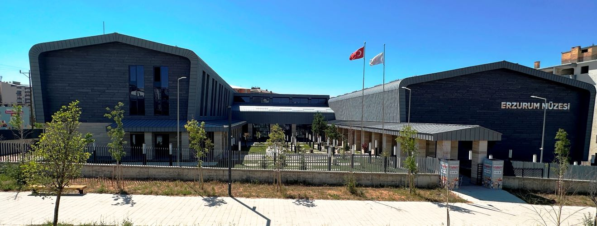
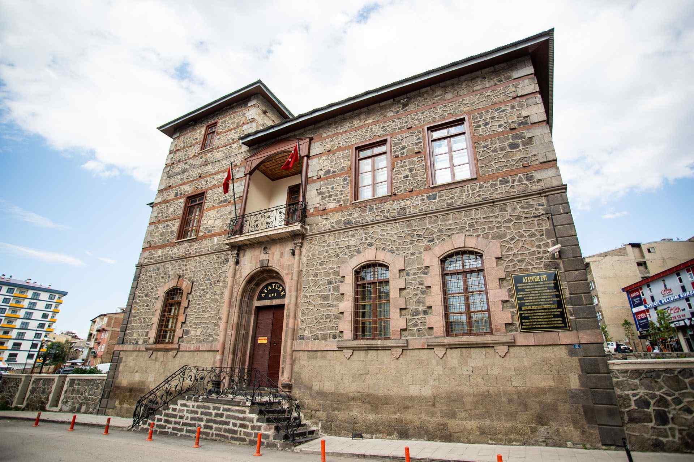
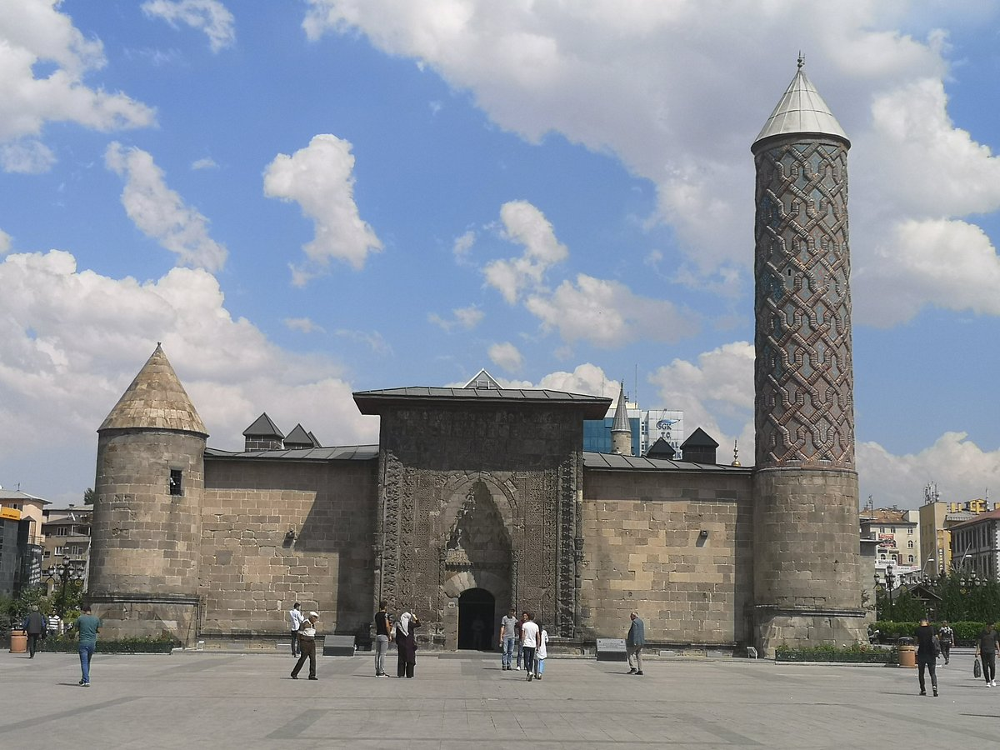
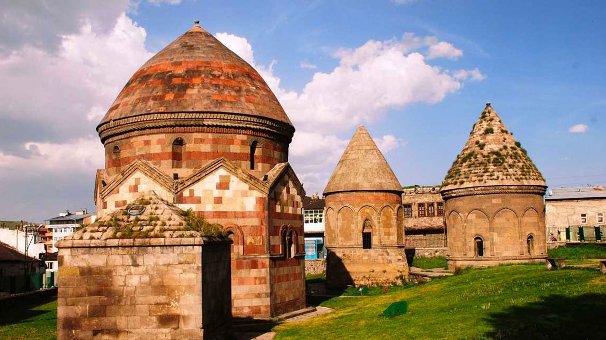
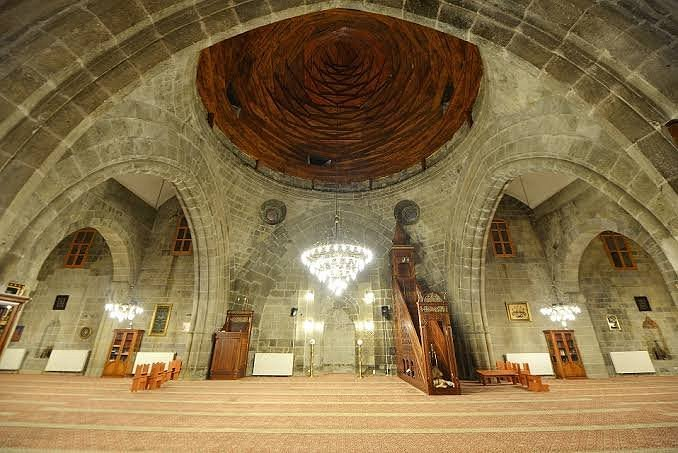
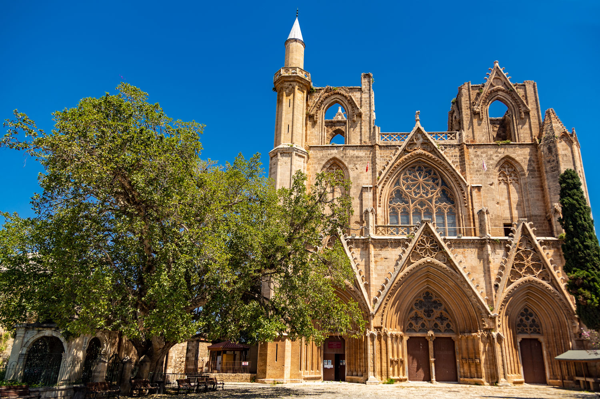

Erzurum Kültürel Yerler
Doğu Anadolu'nun Tarihi ve Kültürel Başkentinin Mirası
Müzeler

Erzurum Müzesi
Bölgenin arkeolojik ve etnografik eserlerini sergileyen müze.

Atatürk Evi
Mustafa Kemal Atatürk'ün Erzurum'da kaldığı tarihi ev.
Tarihi Yapılar

Çifte Minareli Medrese
Selçuklu döneminden kalma önemli bir medrese.

Yakutiye Medresesi
İlhanlı döneminden kalma tarihi medrese.

Üç Kümbetler
Selçuklu döneminden kalma tarihi türbeler.
Tarihi Camiler

Ulu Cami
Saltuklu döneminden kalma şehrin en eski camisi.

Lala Paşa Camii
Osmanlı döneminden kalma tarihi cami.